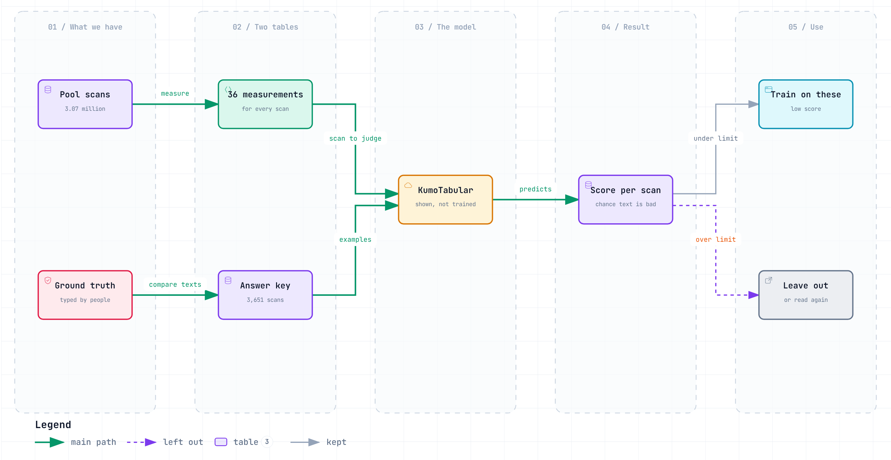

We know how good the old pipeline's text is for 3,651 scans, and we need to know it for 3 million. This page shows how a model called KumoTabular bridges that gap, what it looks at, and how far to trust it. All numbers are from the run of 22 November 2026.

Open the interactive version of this diagram to zoom, search and follow one path at a time.
Every pool scan has text from the old pipeline. For 3,651 pool scans a person has also typed the correct text, so we can put the two side by side. A scan is called bad if any one of three things is true:
By this rule 474 of the 3,651 scans are bad (13 %) and the rest are good. This table of scans with a known answer is the answer key.
None of these need a person, so we have them for all 3 million scans. They fall into four groups. The model never sees the page image itself, only these numbers.
| Group | Measurements | Why it can reveal a bad label |
|---|---|---|
| The old pipeline's own output 16 measurements | Its confidence in the page; number of regions, lines, empty lines, characters, words; share of digits; line height and its spread; line width; characters per 100 pixels; lines with odd density; how much of the page its outlines cover; repeated lines; longest run without a space; how repetitive the text is | Bad reading leaves traces in the text itself: low confidence, lines far too long or short for their width, the same line repeated, text that is unusually repetitive. |
| Where the writing is 4 measurements | Share of the scan that is writing; share under labels; share of the writing that has a label; share of the labels that hold writing | Catches missed pages and columns (writing with no label) and labels on show-through (label with no writing). |
| What kind of page it is 11 measurements | Page-cut class and its certainty; table or not; kind of page; layout; language and its certainty; which of 64 groups of similar-looking scans; which pool | The old pipeline does much worse on some kinds: tables, pages that are not Swedish, unusual layouts. |
| The image itself 5 measurements | Width, height, colour or grey, colour saturation, how clear the fold between the two pages is | Microfilm, small or oddly shaped scans and unclear folds go together with worse labels. |
How well one measurement alone separates bad from good (0.5 is a coin toss, 1.0 is perfect):
Bars start at 0.5. No single measurement is enough; the combination is clearly better.
An ordinary model would be trained on the answer key for a while and then used. KumoTabular works differently. It was trained once, by NVIDIA, on millions of made-up tables, to become good at one skill: looking at a table of examples and guessing the missing column for new rows.
So for us nothing is trained. Each time, we hand it two things together:
It compares each new scan with the examples and returns the chance that its old label is bad, a number from 0 to 1. This takes 2,650 scans a second on one GPU, so all 3 million take about 20 minutes. If we add rows to the answer key tomorrow, it uses them at once, with no retraining.
We hid the answers for a fifth of the answer key at a time, always whole volumes so the model could not recognise a book it had seen, and asked for predictions. Three ways of scoring were compared.
| Method | Tells bad from good | Bad scans ranked first | Guesses the error rate |
|---|---|---|---|
| Kumo, 36 measurements | 0.904 | 0.776 | 0.637 |
| Tree model (LightGBM), same measurements | 0.882 | 0.662 | 0.513 |
| Old pipeline's confidence alone | 0.841 | – | – |
| Image vector alone, no measurements | 0.75 | 0.34 | 0.50 |
Columns: AUC, average precision, and Spearman correlation with the true character error rate. Higher is better in all three; 1.0 is perfect.
The score also means what it says. Among held-out scans, this share was truly bad in each score band:
In practice: leaving out the 10 % of scans with the highest score removes 62 % of the bad ones. Leaving out 20 % removes 81 %.
The score becomes two columns on the scan table, quality_bad and quality_cer, so a training set is still just a filter.
The pools score much worse than the answer key. In the answer key 13 % of scans are bad. Across the 2 million pool scans scored so far, 45 % get a score over 0.5. Either the pools really are that much worse, or the model is being too harsh on pages unlike its examples. We cannot tell from numbers alone; it needs a look at samples.
The answer key is flattering. Its scans are ones the ground truth covers, and the old pipeline's reader may have been trained on those very pages. Old labels there are unusually good (typical error 3.8 %), so the model has seen few truly bad scans.
One strong signal is missing. How much our own reader disagrees with the old text is not among the 36, because our reader has not read the answer-key scans. Adding it should help.
It is less even than the tree model. On its weakest held-out group of volumes Kumo scored 0.73 and the tree model 0.80.